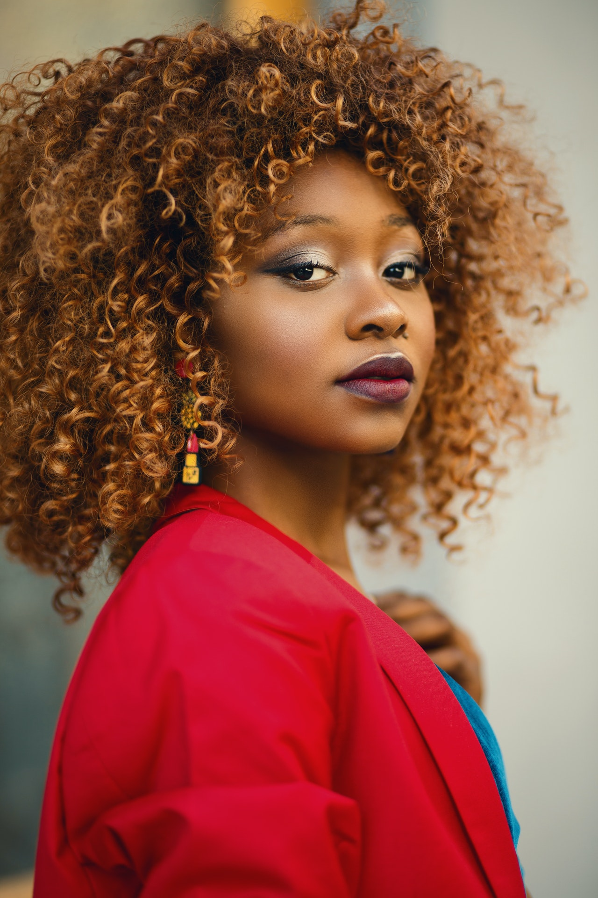
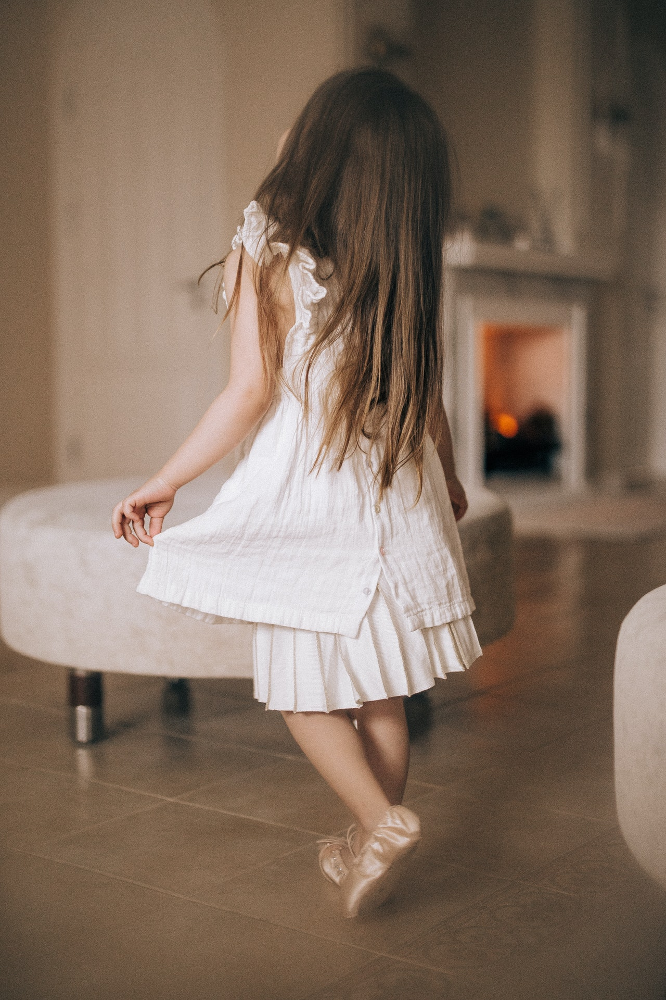
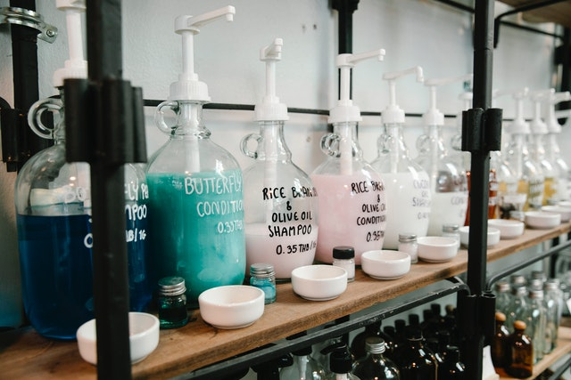
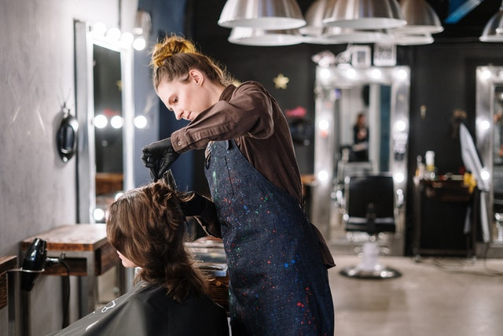

Galerija slika



Njega kose
Frizerski salon Hans Studio izabrao je za vas Revlon Professional tretmanske proizvode za različite tipove i boju kose: za hidrataciju suhe kose, za oštećenu kemijski treiranu kosu, za obnavljanje oslabljele ili sijede kose, za tanku i beživotnu odnosno slabiju kosu, za osjetljivu obojenu kosu, za kosu pri izlaganju suncu, morskoj vodi i kloriranoj vodi. Svaka kosa ima svoj, drugačiji faktor. Prirodnoj kosi potrebna je drugačija njega nego primjerice onduliranoj. Odaberite proizvod koji najbolje odgovara vašoj kosi i prepustite se iskusnim rukama naših stručnjaka.
Bojanje
Bojanjem kose dobivate potpuno drugačiji izgled, naravno ako odaberete boju koja vam najbolje pristaje. Pritom morate voditi računa da dobijete ono što ste htjeli, odnosno precizno odrediti boju i nijansu kose. Preporučamo vam savjetovanje s našim stilistom oko odabira nijanse. Profesionalni stilista će vas upozoriti da bojanje kose ne smije biti prečesto i da je moguće da željeni rezultat ne postignete prvim bojanjem kose.
Svečane frizure
Svečane frizure podrazumijevaju ne samo frizure za vjenčanja, već i za ostale prigode. Najčešće se traže frizure za krštenja, frizure za krizme, frizure za djevojačko večer, frizure za maturalnu večeru, frizure za promociju i sl. Kako se radi o specijalnim prigodama, tako i frizure moraju biti posebne, dali jednostavne i elegantne, s nakitom i ukrasima, nježno kovrčave, isprepletene, opuštene i po želji.
You must agree before submitting.
| Dan | Radno vrijeme: |
|---|---|
| Ponedjeljak | 8:00 - 16:00 |
| Utorak | 8:00 -16:00 |
| Srijeda | 8:00 -16:00 |
| Četvrtak | 8:00 -16:00 |
| Petak | 8:00 -16:00 |
| Subota | 8:00 -16:00 |
*Nedjeljom i blagdanima ne radimo